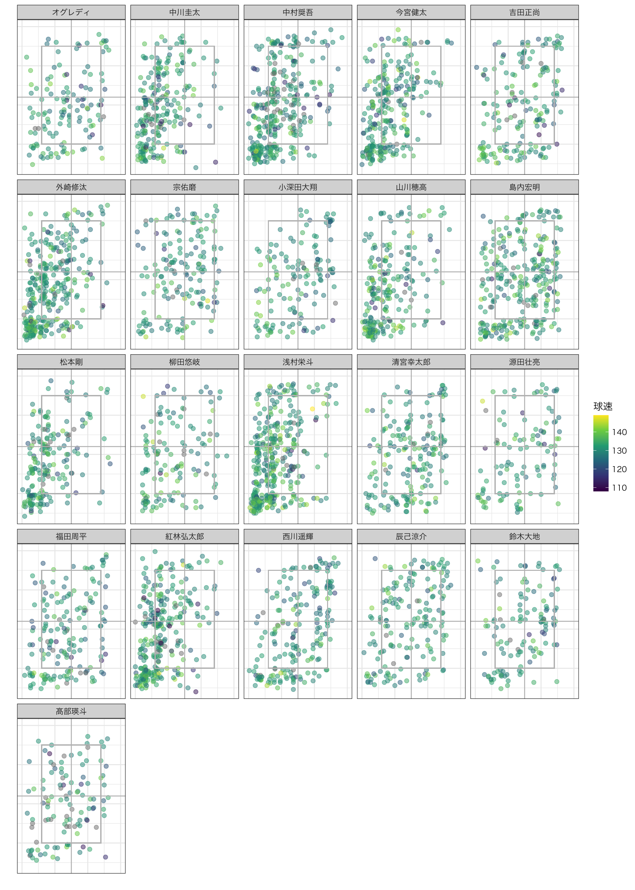
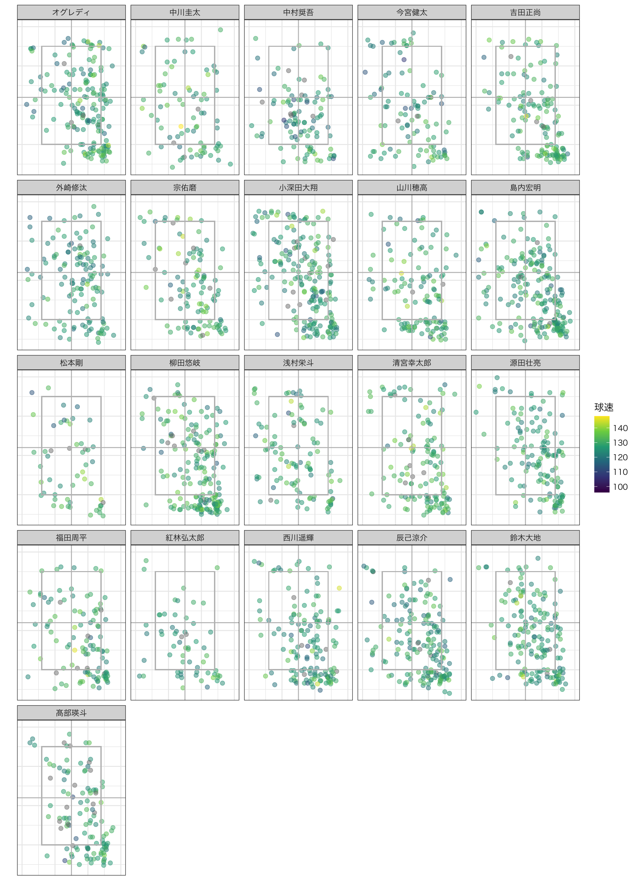
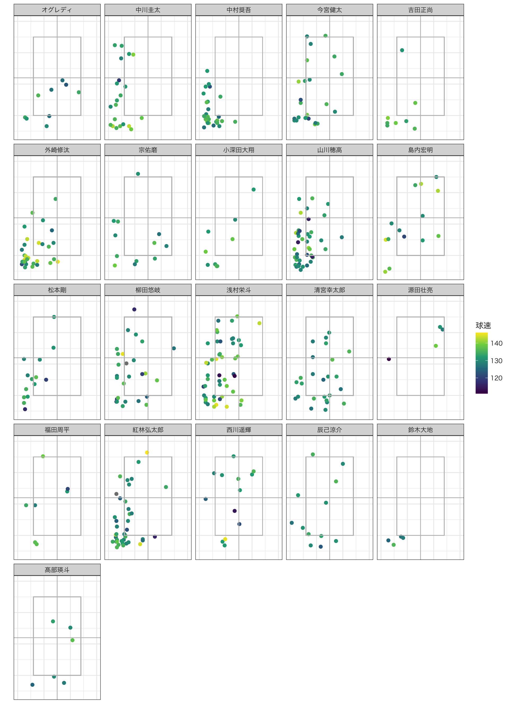
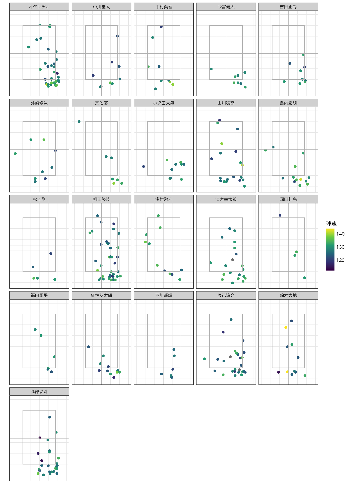
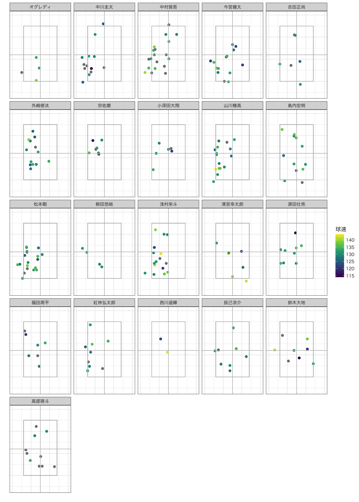
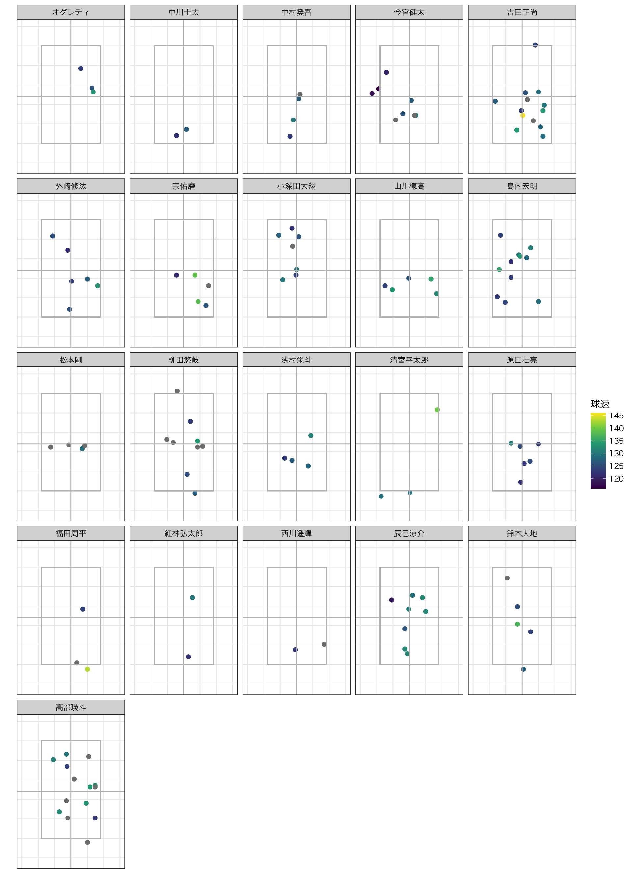

| 単打 | 長打 | 本塁打 | 空振り | 見逃し | 内野ゴ | 内野直 | 内野飛 | 外野飛 | ファウル | ボール | 失出塁 | 振逃 | 犠打 | 球数合計 | |
|---|---|---|---|---|---|---|---|---|---|---|---|---|---|---|---|
| 120km台 | 4 | 3 | 0 | 22 | 92 | 10 | 1 | 4 | 13 | 38 | 106 | 1 | 0 | 1 | 295 |
| 130km台 | 77 | 21 | 9 | 249 | 622 | 94 | 7 | 38 | 93 | 395 | 1098 | 4 | 1 | 4 | 2712 |
| 140km台 | 99 | 26 | 15 | 372 | 660 | 154 | 9 | 47 | 127 | 539 | 1302 | 5 | 1 | 3 | 3359 |
| 150km台 | 9 | 2 | 0 | 41 | 55 | 13 | 0 | 3 | 7 | 51 | 136 | 0 | 0 | 0 | 317 |
| NA | 53 | 10 | 5 | 6 | 27 | 63 | 3 | 4 | 24 | 48 | 31 | 3 | 0 | 7 | 284 |
| 単打 | 長打 | 本塁打 | 空振り | 見逃し | 内野ゴ | 内野直 | 内野飛 | 外野飛 | ファウル | ボール | 失出塁 | 振逃 | 犠打 | |
|---|---|---|---|---|---|---|---|---|---|---|---|---|---|---|
| 120km台 | 1.36 | 1.02 | 0.00 | 7.46 | 31.19 | 3.39 | 0.34 | 1.36 | 4.41 | 12.88 | 35.93 | 0.34 | 0.00 | 0.34 |
| 130km台 | 2.84 | 0.77 | 0.33 | 9.18 | 22.94 | 3.47 | 0.26 | 1.40 | 3.43 | 14.56 | 40.49 | 0.15 | 0.04 | 0.15 |
| 140km台 | 2.95 | 0.77 | 0.45 | 11.07 | 19.65 | 4.58 | 0.27 | 1.40 | 3.78 | 16.05 | 38.76 | 0.15 | 0.03 | 0.09 |
| 150km台 | 2.84 | 0.63 | 0.00 | 12.93 | 17.35 | 4.10 | 0.00 | 0.95 | 2.21 | 16.09 | 42.90 | 0.00 | 0.00 | 0.00 |
| NA | 18.66 | 3.52 | 1.76 | 2.11 | 9.51 | 22.18 | 1.06 | 1.41 | 8.45 | 16.90 | 10.92 | 1.06 | 0.00 | 2.46 |





